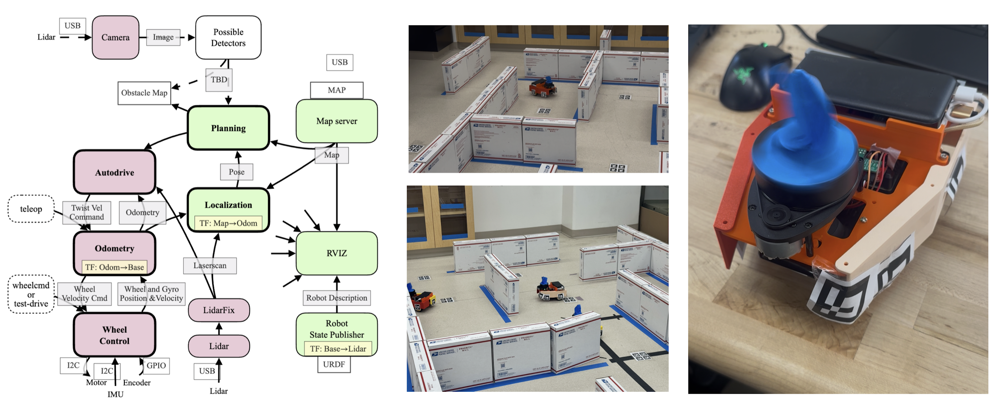

Projects
Jan 2026 - Mar 2026
May 2025 - Jun 2025
Model Predictive Path Integral Control for Obstacle Avoidance
Individual Project · California Institute of Technology
Sampling-based trajectory optimization with CVaR risk metrics for safety-critical obstacle avoidance, achieving 100% success across 20+ randomized environments with 87% reduction in safety violations.
Apr 2025 - Jun 2025
ROS 2 Autonomous Pac-Man Explorer
Team Project · California Institute of Technology
Full ROS 2 navigation stack for autonomous maze navigation on a Raspberry Pi robot, with dual-tree RRT-Connect planning and scan-to-map LIDAR localization at 200 Hz.


Feb 2025 - Mar 2025

Oct 2024 - Dec 2024